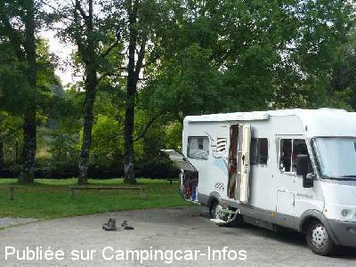
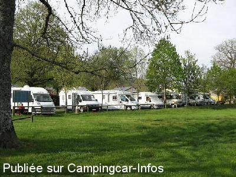
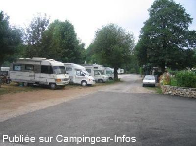
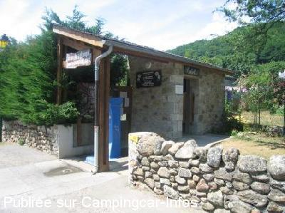

ASN = Aire de services avec stationnement nuit possible de :
FRAISSE SUR AGOUT
(N° 342)
Accès/adresse :
Chemin de La Salvetat à Fraisse
34330 FRAISSE SUR AGOUT
34330 FRAISSE SUR AGOUT
Latitude : (Nord) 43.60436° Décimaux ou 43° 36′ 15′′
Longitude : (Est) 2.79606° Décimaux ou 2° 47′ 45′′
Tarif : 2016
Stationnement, services, électricité : 7 €
Type de borne : FLOT BLEU
Services :


Autres informations :
Ouvert du 01/03 au 11/11
10 emplacements ombragés
4 prises de courant sur la borne
Tel : +33(0)467 975 363
ot-espinouse@wanadoo.fr
http://www.hautlanguedoc.fr/
Point de départ de belles balades et zone de pêche à la truite

Le 04/11/2012 par jeanic

Le 03/01/2011 par Villages et terres de fFrance

Le 15/08/2005 par westie62

Le 15/08/2005 par westie62
de
andre
le 04/04/2016 :
De passage le 1 avril 2016 sous la pluie, le village est trés beau ainsi que l'aire nous reviendrons aux beaux jours ...
De passage le 1 avril 2016 sous la pluie, le village est trés beau ainsi que l'aire nous reviendrons aux beaux jours ...
de
coco
le 10/08/2015 :
passé le week-end du 8 aout, aire très agréable, au calme, reposante, merci à la mairie, seul bémol, trop peu de prises électriques pour le nombre de camping-cars.
passé le week-end du 8 aout, aire très agréable, au calme, reposante, merci à la mairie, seul bémol, trop peu de prises électriques pour le nombre de camping-cars.
de
maryline
le 13/09/2014 :
de passage en août 2014, superbe endroit très calme. Et nous avons eu la chance d'avoir droit à la visite commentée et gratuite du village, suivie d'un pot d'accueil (saucisson de pays et vin rouge et rosé du département. Vraiment très sympathique, merci à la commune.
de passage en août 2014, superbe endroit très calme. Et nous avons eu la chance d'avoir droit à la visite commentée et gratuite du village, suivie d'un pot d'accueil (saucisson de pays et vin rouge et rosé du département. Vraiment très sympathique, merci à la commune.
de
Bruno
le 28/04/2014 :
§
Je confirme que cette aire est vraiment très agréable.
Calme et joli cadre, 7 € la nuitée, électricité comprise, le top !
§
Je confirme que cette aire est vraiment très agréable.
Calme et joli cadre, 7 € la nuitée, électricité comprise, le top !
de
2 jours fin octobre
le 29/10/2013 :
Vraiment agréable. Avec en sus petit resto et patronne sympa.
Vraiment agréable. Avec en sus petit resto et patronne sympa.
de
PapyGaston
le 19/08/2013 :
Passé deux jour début aout, aire super calme merci à la commune. Allez faire un tour au magasin de le ferme dans le bourg.
Passé deux jour début aout, aire super calme merci à la commune. Allez faire un tour au magasin de le ferme dans le bourg.
de
jeanic
le 04/11/2012 :
Séjour en septembre,joli village accueillant( petit bémol pour l'office du tourisme), point de départ de plusieurs randonnées mais aussi cueillette de cèpes du hêtre.
L'aire est très agréable, mais attention au stationnement sur sol herbeux en cas de pluie.
Séjour en septembre,joli village accueillant( petit bémol pour l'office du tourisme), point de départ de plusieurs randonnées mais aussi cueillette de cèpes du hêtre.
L'aire est très agréable, mais attention au stationnement sur sol herbeux en cas de pluie.
de
jeremi
le 19/05/2012 :
tres lojie site village tres sympat ne manque rien pain epicerie tout est la super aire tres bien les gens sympat bien equipee tres bien pour les enfants ne pas manque de s arrete
tres lojie site village tres sympat ne manque rien pain epicerie tout est la super aire tres bien les gens sympat bien equipee tres bien pour les enfants ne pas manque de s arrete
de
jcs
le 09/06/2011 :
superbe endroit, sous sommes restés 2 jours les 23/24 mai 2011, pas assez longtemps, nous reviendrons car il y à de quoi se distraire dans cette magnifique région que nous ne connaissions pas.
superbe endroit, sous sommes restés 2 jours les 23/24 mai 2011, pas assez longtemps, nous reviendrons car il y à de quoi se distraire dans cette magnifique région que nous ne connaissions pas.
de
jpierre
le 04/05/2011 :
De passage en fin avril 2011, aire calme et paisible, une aire idéale pour se détendre, sans bruit, avec les canards pas loin pour leurs donner du pain, la vrai vie...quoi !!!
De passage en fin avril 2011, aire calme et paisible, une aire idéale pour se détendre, sans bruit, avec les canards pas loin pour leurs donner du pain, la vrai vie...quoi !!!
de
Marc
le 20/06/2010 :
L'aire est vraiment superbe et calme, magnifique environnement. Excellents produits et accueil très sympathique à la ferme/charcuterie du village. Le tarif, par contre, est passé à 7€.
L'aire est vraiment superbe et calme, magnifique environnement. Excellents produits et accueil très sympathique à la ferme/charcuterie du village. Le tarif, par contre, est passé à 7€.
de
COURET
le 24/11/2009 :
Une aire comme on en voudrait par centaines, très jolie, très calme, en bordure de rivière dont les ilots sont aménagés pour le pique-nique, un régal. Environ 10 places (stationnement gratuit), un wc public mais une seule borne de services (6€ à payer à un agent communal qui passe #####), en bord de rivière très joliment aménagée pour la promenade. Seul bémol en cette période, le village est désert. §
Une aire comme on en voudrait par centaines, très jolie, très calme, en bordure de rivière dont les ilots sont aménagés pour le pique-nique, un régal. Environ 10 places (stationnement gratuit), un wc public mais une seule borne de services (6€ à payer à un agent communal qui passe #####), en bord de rivière très joliment aménagée pour la promenade. Seul bémol en cette période, le village est désert. §
de
branchard christian
le 30/03/2009 :
A savoir que madame le maire adore les camping-caristes, elle organise tous les ans une petite soirée feu de la Saint Jean au mois de juin, en leurs honneur, saucisses grillées, fromage, fruits.
Merçi madame, votre journée du lendemain est aussi très sympa. Dans le village, petit parcours pédestre avec des pancartes faites par les enfants du village,
pour le respect de la nature avec explications sur la flore.
Au bord de l'Agout, il y a possibilité de louer des cannes à pêche et là, un vrai bonheur, on gagne à tous les coups de superbes truites!
A savoir que madame le maire adore les camping-caristes, elle organise tous les ans une petite soirée feu de la Saint Jean au mois de juin, en leurs honneur, saucisses grillées, fromage, fruits.
Merçi madame, votre journée du lendemain est aussi très sympa. Dans le village, petit parcours pédestre avec des pancartes faites par les enfants du village,
pour le respect de la nature avec explications sur la flore.
Au bord de l'Agout, il y a possibilité de louer des cannes à pêche et là, un vrai bonheur, on gagne à tous les coups de superbes truites!
de
beauvois
le 01/06/2008 :
Village très fleuri, sanitaires avec papier toilette et brosse, aire très propre, très joli décor, bref super. Mais attention aux gros CC. Au depart de Fraysse ne pas prendre direction de Saint Pons car des virages secs, raides et courts, avec des portions à 8% ET 12% dangereuses.
Village qui mérite le détour pour son superbe cadre!
Village très fleuri, sanitaires avec papier toilette et brosse, aire très propre, très joli décor, bref super. Mais attention aux gros CC. Au depart de Fraysse ne pas prendre direction de Saint Pons car des virages secs, raides et courts, avec des portions à 8% ET 12% dangereuses.
Village qui mérite le détour pour son superbe cadre!
de
cyril
le 17/09/2006 :
Aire agréable, calme, ombragée. Seul inconvénient seulement 10 emplacements si les voitures ne prennent pas ces places. 6€/24h services + électricité. Sympa pour amateurs de pêche et de champignons...
Aire agréable, calme, ombragée. Seul inconvénient seulement 10 emplacements si les voitures ne prennent pas ces places. 6€/24h services + électricité. Sympa pour amateurs de pêche et de champignons...